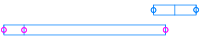

| ID | Image | logFC | p-Value | Adjusted p-Value |
|---|---|---|---|---|
| ID | Image | logFC | p-Value | Adjusted p-Value |
| PNGGKMNL_02477 | 5.070 | 1.46e-246 | 3.68e-243 | |
| PNGGKMNL_00432 | 4.490 | 2.84e-239 | 3.59e-236 | |
| PNGGKMNL_01090 | -2.670 | 1.27e-233 | 1.07e-230 | |
| PNGGKMNL_02518 | -4.840 | 1.76e-178 | 1.11e-175 | |
| PNGGKMNL_01398 | -3.370 | 1.42e-166 | 7.20e-164 | |
| PNGGKMNL_02516 | -5.540 | 1.25e-163 | 5.29e-161 | |
| PNGGKMNL_02480 | 5.090 | 2.80e-129 | 1.01e-126 | |
| PNGGKMNL_02520 | -3.590 | 1.93e-125 | 6.11e-123 | |
| PNGGKMNL_01461 | 1.020 | 6.76e-125 | 1.90e-122 | |
| PNGGKMNL_00267 | 1.400 | 1.56e-121 | 3.95e-119 | |
| PNGGKMNL_01973 | 5.250 | 2.15e-120 | 4.94e-118 | |
| PNGGKMNL_01095 | -2.780 | 1.20e-109 | 2.54e-107 | |
| PNGGKMNL_02056 | -4.300 | 9.50e-105 | 1.85e-102 | |
| PNGGKMNL_01396 | -3.440 | 5.89e-103 | 1.06e-100 | |
| PNGGKMNL_00644 | -3.840 | 2.76e-101 | 4.65e-99 | |
| PNGGKMNL_01091 | -2.500 | 4.84e-101 | 7.65e-99 | |
| PNGGKMNL_02521 | -3.950 | 5.43e-99 | 8.07e-97 | |
| PNGGKMNL_02381 | -1.240 | 3.56e-96 | 5.00e-94 | |
| PNGGKMNL_02519 | -3.390 | 2.44e-93 | 3.25e-91 | |
| PNGGKMNL_01082 | -2.600 | 3.79e-91 | 4.79e-89 | |
| PNGGKMNL_00430 | 2.100 | 1.20e-90 | 1.44e-88 | |
| PNGGKMNL_01096 | -3.420 | 2.37e-90 | 2.72e-88 | |
| PNGGKMNL_01097 | -2.850 | 6.53e-88 | 7.17e-86 | |
| PNGGKMNL_02517 | -5.030 | 1.15e-87 | 1.22e-85 | |
| PNGGKMNL_00667 | -3.210 | 9.48e-83 | 9.58e-81 | |
| PNGGKMNL_01894 | 0.932 | 3.78e-81 | 3.68e-79 | |
| PNGGKMNL_01086 | -2.450 | 9.70e-79 | 9.08e-77 | |
| PNGGKMNL_01087 |  | -2.140 | 1.54e-77 | 1.39e-75 |
| PNGGKMNL_01098 | -2.490 | 4.46e-75 | 3.88e-73 | |
| PNGGKMNL_00658 | -3.440 | 1.52e-74 | 1.28e-72 | |
| PNGGKMNL_00652 | -4.160 | 1.75e-72 | 1.42e-70 | |
| PNGGKMNL_00653 | -2.370 | 5.00e-71 | 3.95e-69 | |
| PNGGKMNL_00643 | -3.800 | 7.23e-71 | 5.54e-69 | |
| PNGGKMNL_02476 | 4.710 | 3.38e-66 | 2.51e-64 | |
| PNGGKMNL_00645 |  | -3.680 | 5.14e-66 | 3.71e-64 |
| PNGGKMNL_00113 | -3.380 | 2.41e-65 | 1.69e-63 | |
| PNGGKMNL_00655 | -2.890 | 1.93e-64 | 1.32e-62 | |
| PNGGKMNL_02478 | 4.950 | 5.56e-62 | 3.70e-60 | |
| PNGGKMNL_00924 | 0.958 | 1.27e-60 | 8.22e-59 | |
| PNGGKMNL_00112 | -4.000 | 1.39e-60 | 8.80e-59 | |
| PNGGKMNL_00656 | -3.390 | 4.55e-60 | 2.81e-58 | |
| PNGGKMNL_01094 | -3.360 | 1.11e-57 | 6.68e-56 | |
| PNGGKMNL_01397 | -3.220 | 1.09e-56 | 6.41e-55 | |
| PNGGKMNL_00661 | -2.710 | 1.57e-56 | 9.00e-55 | |
| PNGGKMNL_01771 | 1.360 | 4.83e-55 | 2.71e-53 | |
| PNGGKMNL_00947 | -3.630 | 1.63e-54 | 8.95e-53 | |
| PNGGKMNL_01781 | 1.250 | 1.75e-54 | 9.42e-53 | |
| PNGGKMNL_00666 | -2.610 | 2.96e-54 | 1.56e-52 | |
| PNGGKMNL_00668 | -3.240 | 4.68e-53 | 2.42e-51 | |
| PNGGKMNL_00775 | 1.490 | 3.80e-50 | 1.92e-48 | |
| PNGGKMNL_01085 | -2.300 | 2.35e-49 | 1.16e-47 | |
| PNGGKMNL_00102 | -1.470 | 6.53e-49 | 3.17e-47 | |
| PNGGKMNL_00684 | -3.090 | 1.71e-48 | 8.17e-47 | |
| PNGGKMNL_01666 | 1.490 | 3.76e-48 | 1.76e-46 | |
| PNGGKMNL_01080 | -2.510 | 2.15e-46 | 9.90e-45 | |
| PNGGKMNL_00669 | 0.841 | 4.43e-46 | 2.00e-44 | |
| PNGGKMNL_01178 | 1.420 | 5.39e-46 | 2.39e-44 | |
| PNGGKMNL_00007 | -2.170 | 1.16e-45 | 5.04e-44 | |
| PNGGKMNL_02435 | 1.250 | 8.62e-45 | 3.69e-43 | |
| PNGGKMNL_00376 | -2.640 | 9.33e-45 | 3.88e-43 | |
| PNGGKMNL_01118 | -2.170 | 9.37e-45 | 3.88e-43 | |
| PNGGKMNL_01899 | -2.040 | 1.16e-44 | 4.74e-43 | |
| PNGGKMNL_01117 | -2.360 | 1.09e-43 | 4.38e-42 | |
| PNGGKMNL_00639 | -1.400 | 7.35e-43 | 2.90e-41 | |
| PNGGKMNL_00877 | -0.901 | 6.39e-42 | 2.49e-40 | |
| PNGGKMNL_00431 | 4.540 | 8.17e-41 | 3.13e-39 | |
| PNGGKMNL_00810 | 1.490 | 2.37e-40 | 8.94e-39 | |
| PNGGKMNL_00290 | 2.030 | 2.85e-40 | 1.06e-38 | |
| PNGGKMNL_01550 | -0.882 | 1.01e-39 | 3.70e-38 | |
| PNGGKMNL_00114 | -2.710 | 1.07e-39 | 3.87e-38 | |
| PNGGKMNL_02162 | 1.160 | 3.86e-39 | 1.37e-37 | |
| PNGGKMNL_01077 | -2.810 | 1.08e-38 | 3.81e-37 | |
| PNGGKMNL_00665 | -2.460 | 3.17e-38 | 1.10e-36 | |
| PNGGKMNL_00426 | -0.922 | 3.59e-38 | 1.23e-36 | |
| PNGGKMNL_01149 | -1.110 | 4.17e-38 | 1.40e-36 | |
| PNGGKMNL_01076 | -2.990 | 7.78e-38 | 2.59e-36 | |
| PNGGKMNL_00878 | -1.070 | 1.11e-37 | 3.64e-36 | |
| PNGGKMNL_01582 | -1.130 | 3.52e-37 | 1.14e-35 | |
| PNGGKMNL_02557 | 0.555 | 5.19e-37 | 1.66e-35 | |
| PNGGKMNL_00808 | 0.842 | 1.31e-36 | 4.15e-35 | |
| PNGGKMNL_01950 | 1.050 | 1.56e-35 | 4.86e-34 | |
| PNGGKMNL_00965 | 0.754 | 2.53e-35 | 7.81e-34 | |
| PNGGKMNL_01152 | 1.230 | 7.98e-35 | 2.43e-33 | |
| PNGGKMNL_01462 | 0.506 | 2.12e-34 | 6.39e-33 | |
| PNGGKMNL_01440 | -1.570 | 2.64e-34 | 7.84e-33 | |
| PNGGKMNL_00500 | 0.630 | 2.79e-34 | 8.21e-33 | |
| PNGGKMNL_00060 | 0.617 | 3.40e-34 | 9.87e-33 | |
| PNGGKMNL_01497 | 0.971 | 5.67e-34 | 1.63e-32 | |
| PNGGKMNL_00646 | -4.050 | 5.75e-34 | 1.63e-32 | |
| PNGGKMNL_01078 | -3.240 | 5.84e-34 | 1.64e-32 | |
| PNGGKMNL_00813 | 1.010 | 6.98e-34 | 1.94e-32 | |
| PNGGKMNL_02008 | 1.210 | 9.32e-34 | 2.56e-32 | |
| PNGGKMNL_00562 | 1.090 | 9.71e-34 | 2.64e-32 | |
| PNGGKMNL_01657 | 2.120 | 4.21e-33 | 1.13e-31 | |
| PNGGKMNL_02057 | -2.060 | 6.69e-33 | 1.78e-31 | |
| PNGGKMNL_00812 | 1.090 | 1.11e-32 | 2.93e-31 | |
| PNGGKMNL_00683 | -1.280 | 2.43e-32 | 6.34e-31 | |
| PNGGKMNL_00107 | -1.120 | 4.00e-32 | 1.03e-30 | |
| PNGGKMNL_00587 | 1.690 | 6.68e-32 | 1.71e-30 | |
| PNGGKMNL_00638 | -1.820 | 8.42e-32 | 2.13e-30 | |
| PNGGKMNL_00915 |  | 0.946 | 1.87e-31 | 4.68e-30 |
| PNGGKMNL_01099 | -3.100 | 2.32e-31 | 5.74e-30 | |
| PNGGKMNL_01092 | -2.780 | 4.88e-31 | 1.20e-29 | |
| PNGGKMNL_00642 |  | -3.440 | 8.06e-31 | 1.96e-29 |
| PNGGKMNL_00641 | -3.020 | 1.20e-30 | 2.89e-29 | |
| PNGGKMNL_00076 | -1.180 | 1.39e-30 | 3.32e-29 | |
| PNGGKMNL_00491 | -1.910 | 1.78e-30 | 4.21e-29 | |
| PNGGKMNL_00635 |  | -1.850 | 2.42e-30 | 5.68e-29 |
| PNGGKMNL_00275 | 1.210 | 4.31e-30 | 1.00e-28 | |
| PNGGKMNL_01947 | 0.697 | 7.05e-30 | 1.62e-28 | |
| PNGGKMNL_00068 | -1.550 | 1.21e-29 | 2.76e-28 | |
| PNGGKMNL_00845 | -0.824 | 1.65e-29 | 3.72e-28 | |
| PNGGKMNL_00654 | -3.020 | 4.09e-29 | 9.15e-28 | |
| PNGGKMNL_00841 | -0.721 | 4.98e-29 | 1.11e-27 | |
| PNGGKMNL_00505 |  | 1.300 | 7.85e-29 | 1.73e-27 |
| PNGGKMNL_01498 | 2.090 | 9.41e-29 | 2.05e-27 | |
| PNGGKMNL_00728 | 0.776 | 9.81e-29 | 2.12e-27 | |
| PNGGKMNL_01089 | -1.750 | 1.36e-28 | 2.92e-27 | |
| PNGGKMNL_01041 | 0.383 | 1.40e-28 | 2.98e-27 | |
| PNGGKMNL_00513 | 3.020 | 2.01e-28 | 4.24e-27 | |
| PNGGKMNL_00657 | -2.620 | 2.04e-28 | 4.26e-27 | |
| PNGGKMNL_01079 | -2.510 | 5.15e-28 | 1.07e-26 | |
| PNGGKMNL_00662 | -2.950 | 3.66e-27 | 7.52e-26 | |
| PNGGKMNL_00521 | -0.519 | 8.17e-27 | 1.66e-25 | |
| PNGGKMNL_00207 | 0.929 | 8.21e-27 | 1.66e-25 | |
| PNGGKMNL_01895 | 0.596 | 4.93e-26 | 9.89e-25 | |
| PNGGKMNL_00806 | 0.807 | 6.84e-26 | 1.36e-24 | |
| PNGGKMNL_00738 | -1.360 | 7.29e-26 | 1.44e-24 | |
| PNGGKMNL_01084 | -1.940 | 1.29e-25 | 2.53e-24 | |
| PNGGKMNL_01999 | 0.755 | 2.04e-25 | 3.96e-24 | |
| PNGGKMNL_00453 | -0.904 | 3.48e-25 | 6.72e-24 | |
| PNGGKMNL_00659 | -2.660 | 3.63e-25 | 6.95e-24 | |
| PNGGKMNL_00919 | 0.769 | 3.83e-25 | 7.28e-24 | |
| PNGGKMNL_02407 | -1.180 | 6.74e-25 | 1.27e-23 | |
| PNGGKMNL_01671 | 0.904 | 1.24e-24 | 2.33e-23 | |
| PNGGKMNL_00534 | -0.880 | 2.08e-24 | 3.86e-23 | |
| PNGGKMNL_00770 | 0.928 | 2.94e-24 | 5.43e-23 | |
| PNGGKMNL_00433 | -1.730 | 4.06e-24 | 7.44e-23 | |
| PNGGKMNL_01854 | 0.884 | 6.36e-24 | 1.16e-22 | |
| PNGGKMNL_01116 | -2.860 | 6.62e-24 | 1.19e-22 | |
| PNGGKMNL_01083 |  | -1.620 | 6.62e-24 | 1.19e-22 |
| PNGGKMNL_00331 | -3.620 | 7.31e-24 | 1.30e-22 | |
| PNGGKMNL_01399 | -2.470 | 1.51e-23 | 2.67e-22 | |
| PNGGKMNL_01672 | 1.090 | 2.18e-23 | 3.82e-22 | |
| PNGGKMNL_00123 | -0.941 | 2.71e-23 | 4.72e-22 | |
| PNGGKMNL_01155 | 0.577 | 2.75e-23 | 4.77e-22 | |
| PNGGKMNL_00189 | -2.160 | 4.49e-23 | 7.72e-22 | |
| PNGGKMNL_00758 | -0.738 | 6.93e-23 | 1.18e-21 | |
| PNGGKMNL_00946 |  | -2.970 | 9.95e-23 | 1.69e-21 |
| PNGGKMNL_01920 | 0.530 | 1.28e-22 | 2.15e-21 | |
| PNGGKMNL_00459 | -0.659 | 1.62e-22 | 2.71e-21 | |
| PNGGKMNL_01752 | 0.541 | 4.03e-22 | 6.70e-21 | |
| PNGGKMNL_00202 | 0.750 | 4.09e-22 | 6.76e-21 | |
| PNGGKMNL_01153 | 0.460 | 6.17e-22 | 1.01e-20 | |
| PNGGKMNL_00079 | -1.300 | 6.84e-22 | 1.12e-20 | |
| PNGGKMNL_01990 | -0.691 | 6.99e-22 | 1.13e-20 | |
| PNGGKMNL_00530 | -1.450 | 2.34e-21 | 3.77e-20 | |
| PNGGKMNL_02067 | -1.230 | 2.55e-21 | 4.07e-20 | |
| PNGGKMNL_00606 | -0.966 | 2.68e-21 | 4.27e-20 | |
| PNGGKMNL_02234 |  | -0.803 | 3.87e-21 | 6.11e-20 |
| PNGGKMNL_00069 | -2.530 | 4.21e-21 | 6.61e-20 | |
| PNGGKMNL_00651 | -3.540 | 5.89e-21 | 9.20e-20 | |
| PNGGKMNL_01032 | 0.509 | 6.29e-21 | 9.75e-20 | |
| PNGGKMNL_00134 |  | -0.564 | 7.88e-21 | 1.21e-19 |
| PNGGKMNL_01044 | -1.280 | 8.66e-21 | 1.33e-19 | |
| PNGGKMNL_00381 | -0.754 | 1.05e-20 | 1.59e-19 | |
| PNGGKMNL_00660 | -2.380 | 3.09e-20 | 4.67e-19 | |
| PNGGKMNL_02497 | -1.460 | 3.15e-20 | 4.73e-19 | |
| PNGGKMNL_00625 | 3.120 | 4.45e-20 | 6.66e-19 | |
| PNGGKMNL_01937 | 0.635 | 5.69e-20 | 8.46e-19 | |
| PNGGKMNL_00650 | -5.550 | 6.01e-20 | 8.89e-19 | |
| PNGGKMNL_01575 | 0.935 | 7.66e-20 | 1.13e-18 | |
| PNGGKMNL_00930 | -0.706 | 1.28e-19 | 1.86e-18 | |
| PNGGKMNL_00089 | -0.767 | 1.39e-19 | 2.02e-18 | |
| PNGGKMNL_01126 | -0.965 | 1.81e-19 | 2.61e-18 | |
| PNGGKMNL_01093 | -2.810 | 2.31e-19 | 3.33e-18 | |
| PNGGKMNL_01709 | -1.500 | 3.05e-19 | 4.36e-18 | |
| PNGGKMNL_01159 | 0.542 | 3.26e-19 | 4.63e-18 | |
| PNGGKMNL_00373 | 0.733 | 4.00e-19 | 5.65e-18 | |
| PNGGKMNL_01804 | 1.180 | 5.65e-19 | 7.94e-18 | |
| PNGGKMNL_00052 | -0.665 | 6.74e-19 | 9.41e-18 | |
| PNGGKMNL_01975 | 0.692 | 6.78e-19 | 9.42e-18 | |
| PNGGKMNL_00320 | -2.490 | 8.47e-19 | 1.17e-17 | |
| PNGGKMNL_01798 | 0.912 | 1.20e-18 | 1.65e-17 | |
| PNGGKMNL_01495 | 0.884 | 1.89e-18 | 2.58e-17 | |
| PNGGKMNL_01081 | -2.720 | 2.93e-18 | 3.99e-17 | |
| PNGGKMNL_02494 | -0.959 | 3.09e-18 | 4.17e-17 | |
| PNGGKMNL_01301 | 0.756 | 3.68e-18 | 4.95e-17 | |
| PNGGKMNL_01104 | 0.577 | 5.17e-18 | 6.92e-17 | |
| PNGGKMNL_00266 | 0.717 | 7.92e-18 | 1.05e-16 | |
| PNGGKMNL_02001 | 0.882 | 8.49e-18 | 1.12e-16 | |
| PNGGKMNL_01810 | 0.875 | 8.55e-18 | 1.13e-16 | |
| PNGGKMNL_00197 | 0.751 | 9.10e-18 | 1.19e-16 | |
| PNGGKMNL_02496 | -1.410 | 9.24e-18 | 1.20e-16 | |
| PNGGKMNL_00109 | -1.330 | 1.73e-17 | 2.24e-16 | |
| PNGGKMNL_00336 | -3.140 | 1.93e-17 | 2.49e-16 | |
| PNGGKMNL_01763 | 0.589 | 2.71e-17 | 3.48e-16 | |
| PNGGKMNL_00380 | -0.688 | 3.07e-17 | 3.92e-16 | |
| PNGGKMNL_02515 | -1.040 | 3.30e-17 | 4.19e-16 | |
| PNGGKMNL_00934 | 0.638 | 4.90e-17 | 6.19e-16 | |
| PNGGKMNL_01450 | -0.583 | 6.56e-17 | 8.25e-16 | |
| PNGGKMNL_02555 | 0.531 | 7.36e-17 | 9.21e-16 | |
| PNGGKMNL_02562 | -2.850 | 8.23e-17 | 1.03e-15 | |
| PNGGKMNL_02539 | 0.895 | 9.11e-17 | 1.13e-15 | |
| PNGGKMNL_00206 | 0.810 | 1.08e-16 | 1.33e-15 | |
| PNGGKMNL_00284 |  | -3.800 | 1.25e-16 | 1.53e-15 |
| PNGGKMNL_02580 | 0.514 | 1.57e-16 | 1.91e-15 | |
| PNGGKMNL_00647 | -3.070 | 1.63e-16 | 1.98e-15 | |
| PNGGKMNL_01591 | 1.370 | 1.93e-16 | 2.33e-15 | |
| PNGGKMNL_00649 | -3.770 | 2.31e-16 | 2.78e-15 | |
| PNGGKMNL_02472 | 0.988 | 2.75e-16 | 3.30e-15 | |
| PNGGKMNL_00316 | -3.050 | 2.97e-16 | 3.54e-15 | |
| PNGGKMNL_01531 | 0.577 | 3.76e-16 | 4.46e-15 | |
| PNGGKMNL_01419 | -0.852 | 4.39e-16 | 5.19e-15 | |
| PNGGKMNL_02173 | -1.400 | 4.55e-16 | 5.35e-15 | |
| PNGGKMNL_01751 | 0.684 | 5.39e-16 | 6.31e-15 | |
| PNGGKMNL_02430 | 0.818 | 5.66e-16 | 6.57e-15 | |
| PNGGKMNL_00375 |  | 0.761 | 5.67e-16 | 6.57e-15 |
| PNGGKMNL_01339 | 0.558 | 6.05e-16 | 6.99e-15 | |
| PNGGKMNL_00351 | -1.720 | 8.89e-16 | 1.02e-14 | |
| PNGGKMNL_00159 | 0.655 | 9.10e-16 | 1.04e-14 | |
| PNGGKMNL_01217 | 1.280 | 1.07e-15 | 1.22e-14 | |
| PNGGKMNL_02191 | -0.676 | 1.61e-15 | 1.82e-14 | |
| PNGGKMNL_01157 | 0.923 | 1.67e-15 | 1.88e-14 | |
| PNGGKMNL_00319 | -3.910 | 1.68e-15 | 1.88e-14 | |
| PNGGKMNL_01784 | 0.940 | 4.49e-15 | 5.02e-14 | |
| PNGGKMNL_00294 | -1.250 | 4.74e-15 | 5.27e-14 | |
| PNGGKMNL_00809 | 1.010 | 5.09e-15 | 5.65e-14 | |
| PNGGKMNL_02166 | -0.658 | 6.29e-15 | 6.94e-14 | |
| PNGGKMNL_01174 | 0.668 | 6.55e-15 | 7.20e-14 | |
| PNGGKMNL_00525 |  | -0.847 | 6.94e-15 | 7.59e-14 |
| PNGGKMNL_01015 | 0.701 | 9.06e-15 | 9.87e-14 | |
| PNGGKMNL_01427 | -0.797 | 9.24e-15 | 1.00e-13 | |
| PNGGKMNL_00153 | 0.488 | 9.63e-15 | 1.04e-13 | |
| PNGGKMNL_00511 | 1.700 | 1.01e-14 | 1.09e-13 | |
| PNGGKMNL_00974 | 0.770 | 1.28e-14 | 1.37e-13 | |
| PNGGKMNL_01701 | -1.250 | 1.60e-14 | 1.71e-13 | |
| PNGGKMNL_01351 | -0.851 | 1.96e-14 | 2.08e-13 | |
| PNGGKMNL_02193 | -1.080 | 2.18e-14 | 2.31e-13 | |
| PNGGKMNL_01955 | -0.993 | 2.44e-14 | 2.57e-13 | |
| PNGGKMNL_00782 | 0.933 | 2.74e-14 | 2.87e-13 | |
| PNGGKMNL_01459 | 0.941 | 2.81e-14 | 2.93e-13 | |
| PNGGKMNL_00203 | 0.589 | 2.91e-14 | 3.03e-13 | |
| PNGGKMNL_00501 | 0.819 | 3.15e-14 | 3.26e-13 | |
| PNGGKMNL_02065 | -0.885 | 3.45e-14 | 3.56e-13 | |
| PNGGKMNL_00693 | -0.768 | 3.69e-14 | 3.79e-13 | |
| PNGGKMNL_01411 | -1.050 | 4.25e-14 | 4.35e-13 | |
| PNGGKMNL_00827 | -1.250 | 6.09e-14 | 6.21e-13 | |
| PNGGKMNL_01102 | -2.000 | 6.53e-14 | 6.63e-13 | |
| PNGGKMNL_02492 | -0.743 | 6.78e-14 | 6.86e-13 | |
| PNGGKMNL_00595 | 1.270 | 7.33e-14 | 7.38e-13 | |
| PNGGKMNL_01354 | 0.669 | 7.50e-14 | 7.52e-13 | |
| PNGGKMNL_01449 | -0.348 | 7.58e-14 | 7.57e-13 | |
| PNGGKMNL_01156 | 0.865 | 8.37e-14 | 8.33e-13 | |
| PNGGKMNL_01819 | -0.525 | 8.92e-14 | 8.84e-13 | |
| PNGGKMNL_00100 | -1.380 | 9.40e-14 | 9.29e-13 | |
| PNGGKMNL_01502 | 0.782 | 1.03e-13 | 1.01e-12 | |
| PNGGKMNL_01289 | 0.693 | 1.15e-13 | 1.12e-12 | |
| PNGGKMNL_00514 | 2.140 | 1.57e-13 | 1.52e-12 | |
| PNGGKMNL_00746 | 0.888 | 1.57e-13 | 1.52e-12 | |
| PNGGKMNL_00686 | -1.120 | 1.57e-13 | 1.52e-12 | |
| PNGGKMNL_00335 | -3.590 | 1.99e-13 | 1.92e-12 | |
| PNGGKMNL_00874 | -0.697 | 2.04e-13 | 1.96e-12 | |
| PNGGKMNL_01793 | 1.060 | 2.05e-13 | 1.96e-12 | |
| PNGGKMNL_02155 | 0.539 | 2.53e-13 | 2.41e-12 | |
| PNGGKMNL_00231 | 0.245 | 2.72e-13 | 2.59e-12 | |
| PNGGKMNL_00456 | -0.625 | 3.01e-13 | 2.85e-12 | |
| PNGGKMNL_00194 | 0.988 | 3.06e-13 | 2.89e-12 | |
| PNGGKMNL_02601 | 0.513 | 3.59e-13 | 3.37e-12 | |
| PNGGKMNL_01594 | -0.749 | 3.87e-13 | 3.62e-12 | |
| PNGGKMNL_01101 | -0.815 | 4.11e-13 | 3.83e-12 | |
| PNGGKMNL_00992 | 0.547 | 4.12e-13 | 3.83e-12 | |
| PNGGKMNL_00712 | 0.849 | 4.80e-13 | 4.44e-12 | |
| PNGGKMNL_01425 | -0.750 | 5.42e-13 | 5.00e-12 | |
| PNGGKMNL_00392 | -0.923 | 5.79e-13 | 5.32e-12 | |
| PNGGKMNL_01835 | -0.440 | 5.84e-13 | 5.35e-12 | |
| PNGGKMNL_01379 | -0.990 | 6.40e-13 | 5.84e-12 | |
| PNGGKMNL_02108 | 0.754 | 6.87e-13 | 6.25e-12 | |
| PNGGKMNL_01171 | 0.486 | 7.16e-13 | 6.49e-12 | |
| PNGGKMNL_02179 |  | 1.370 | 7.24e-13 | 6.54e-12 |
| PNGGKMNL_02161 | 0.719 | 8.02e-13 | 7.22e-12 | |
| PNGGKMNL_02323 | 0.711 | 9.58e-13 | 8.59e-12 | |
| PNGGKMNL_00536 | -0.944 | 1.05e-12 | 9.37e-12 | |
| PNGGKMNL_00800 | 0.603 | 1.09e-12 | 9.70e-12 | |
| PNGGKMNL_00908 | -0.635 | 1.11e-12 | 9.89e-12 | |
| PNGGKMNL_00082 | -0.681 | 1.27e-12 | 1.12e-11 | |
| PNGGKMNL_02194 | -0.802 | 1.60e-12 | 1.41e-11 | |
| PNGGKMNL_00346 | 0.812 | 1.61e-12 | 1.41e-11 | |
| PNGGKMNL_00075 |  | -1.030 | 2.45e-12 | 2.15e-11 |
| PNGGKMNL_01494 | 0.969 | 2.54e-12 | 2.21e-11 | |
| PNGGKMNL_01799 | 0.643 | 2.89e-12 | 2.51e-11 | |
| PNGGKMNL_01381 | -0.697 | 2.98e-12 | 2.58e-11 | |
| PNGGKMNL_02408 | 0.930 | 3.22e-12 | 2.78e-11 | |
| PNGGKMNL_01714 | -1.010 | 3.31e-12 | 2.85e-11 | |
| PNGGKMNL_01180 | -2.870 | 3.55e-12 | 3.05e-11 | |
| PNGGKMNL_01822 | 0.792 | 3.60e-12 | 3.07e-11 | |
| PNGGKMNL_00945 | -0.830 | 3.89e-12 | 3.31e-11 | |
| PNGGKMNL_00277 | -2.130 | 4.01e-12 | 3.40e-11 | |
| PNGGKMNL_00058 | 0.614 | 4.34e-12 | 3.66e-11 | |
| PNGGKMNL_01218 | 1.780 | 4.34e-12 | 3.66e-11 | |
| PNGGKMNL_02070 | -2.360 | 4.81e-12 | 4.04e-11 | |
| PNGGKMNL_00811 | 1.200 | 5.58e-12 | 4.67e-11 | |
| PNGGKMNL_00086 | -1.140 | 5.64e-12 | 4.70e-11 | |
| PNGGKMNL_00502 | 0.858 | 6.82e-12 | 5.67e-11 | |
| PNGGKMNL_01606 | -0.613 | 8.25e-12 | 6.84e-11 | |
| PNGGKMNL_01058 | -0.506 | 1.03e-11 | 8.51e-11 | |
| PNGGKMNL_02411 | -0.432 | 1.06e-11 | 8.73e-11 | |
| PNGGKMNL_00422 | -0.850 | 1.17e-11 | 9.63e-11 | |
| PNGGKMNL_02115 | 0.949 | 1.19e-11 | 9.72e-11 | |
| PNGGKMNL_01312 | 0.636 | 1.23e-11 | 1.00e-10 | |
| PNGGKMNL_02445 | -1.090 | 1.55e-11 | 1.26e-10 | |
| PNGGKMNL_02583 | -0.804 | 1.56e-11 | 1.26e-10 | |
| PNGGKMNL_01492 | 0.775 | 1.67e-11 | 1.35e-10 | |
| PNGGKMNL_02493 | -1.330 | 1.85e-11 | 1.49e-10 | |
| PNGGKMNL_00302 | -1.180 | 2.30e-11 | 1.84e-10 | |
| PNGGKMNL_01119 | -1.640 | 2.35e-11 | 1.88e-10 | |
| PNGGKMNL_01030 | 0.782 | 2.50e-11 | 1.99e-10 | |
| PNGGKMNL_00752 | 0.638 | 2.54e-11 | 2.02e-10 | |
| PNGGKMNL_01836 | -0.553 | 2.58e-11 | 2.05e-10 | |
| PNGGKMNL_01166 | 0.875 | 2.93e-11 | 2.32e-10 | |
| PNGGKMNL_00138 | 0.803 | 3.02e-11 | 2.38e-10 | |
| PNGGKMNL_00879 | -1.090 | 3.05e-11 | 2.39e-10 | |
| PNGGKMNL_00926 | 1.020 | 3.11e-11 | 2.43e-10 | |
| PNGGKMNL_01300 | 0.837 | 3.39e-11 | 2.65e-10 | |
| PNGGKMNL_01212 | -1.180 | 3.64e-11 | 2.83e-10 | |
| PNGGKMNL_00954 | 0.605 | 3.77e-11 | 2.93e-10 | |
| PNGGKMNL_01615 | -1.630 | 3.86e-11 | 2.99e-10 | |
| PNGGKMNL_02550 | 0.409 | 4.99e-11 | 3.85e-10 | |
| PNGGKMNL_02014 | 0.588 | 5.11e-11 | 3.92e-10 | |
| PNGGKMNL_00531 | 0.848 | 6.03e-11 | 4.62e-10 | |
| PNGGKMNL_00626 |  | 2.020 | 7.25e-11 | 5.54e-10 |
| PNGGKMNL_02584 | 0.458 | 8.67e-11 | 6.60e-10 | |
| PNGGKMNL_00636 | -0.864 | 8.99e-11 | 6.82e-10 | |
| PNGGKMNL_01065 | 0.322 | 9.50e-11 | 7.19e-10 | |
| PNGGKMNL_01756 | 0.668 | 9.89e-11 | 7.47e-10 | |
| PNGGKMNL_00648 | -3.000 | 1.14e-10 | 8.57e-10 | |
| PNGGKMNL_00279 | 0.785 | 1.17e-10 | 8.78e-10 | |
| PNGGKMNL_00268 | 0.725 | 1.27e-10 | 9.49e-10 | |
| PNGGKMNL_00742 | 0.718 | 1.35e-10 | 1.00e-09 | |
| PNGGKMNL_01642 | 1.130 | 1.38e-10 | 1.03e-09 | |
| PNGGKMNL_00334 | -1.480 | 1.39e-10 | 1.03e-09 | |
| PNGGKMNL_01031 | 0.700 | 1.42e-10 | 1.05e-09 | |
| PNGGKMNL_01767 | 0.667 | 1.56e-10 | 1.15e-09 | |
| PNGGKMNL_01313 | 0.718 | 1.75e-10 | 1.29e-09 | |
| PNGGKMNL_00733 | -0.533 | 1.76e-10 | 1.29e-09 | |
| PNGGKMNL_01775 | 0.758 | 1.81e-10 | 1.32e-09 | |
| PNGGKMNL_01258 | -0.827 | 2.01e-10 | 1.46e-09 | |
| PNGGKMNL_01464 | 0.441 | 2.09e-10 | 1.52e-09 | |
| PNGGKMNL_00950 | -0.435 | 2.12e-10 | 1.54e-09 | |
| PNGGKMNL_00149 | 0.760 | 2.39e-10 | 1.73e-09 | |
| PNGGKMNL_01778 |  | 0.788 | 2.43e-10 | 1.75e-09 |
| PNGGKMNL_01546 | 0.453 | 2.47e-10 | 1.78e-09 | |
| PNGGKMNL_00304 | -2.460 | 2.64e-10 | 1.89e-09 | |
| PNGGKMNL_00278 | -0.503 | 2.83e-10 | 2.02e-09 | |
| PNGGKMNL_02163 | 0.580 | 3.41e-10 | 2.43e-09 | |
| PNGGKMNL_00305 | -3.130 | 3.46e-10 | 2.45e-09 | |
| PNGGKMNL_00706 | -0.593 | 3.46e-10 | 2.45e-09 | |
| PNGGKMNL_02473 | 0.473 | 4.54e-10 | 3.20e-09 | |
| PNGGKMNL_01125 | 0.643 | 5.21e-10 | 3.67e-09 | |
| PNGGKMNL_02073 | -0.871 | 5.50e-10 | 3.87e-09 | |
| PNGGKMNL_00029 | 0.345 | 5.91e-10 | 4.14e-09 | |
| PNGGKMNL_01592 |  | -1.090 | 5.98e-10 | 4.17e-09 |
| PNGGKMNL_00272 | 1.020 | 6.04e-10 | 4.21e-09 | |
| PNGGKMNL_02436 | 0.893 | 6.06e-10 | 4.21e-09 | |
| PNGGKMNL_02192 | -1.040 | 6.59e-10 | 4.56e-09 | |
| PNGGKMNL_02410 | -0.891 | 7.03e-10 | 4.85e-09 | |
| PNGGKMNL_01946 | 0.718 | 7.92e-10 | 5.46e-09 | |
| PNGGKMNL_00697 | 0.814 | 8.03e-10 | 5.51e-09 | |
| PNGGKMNL_00765 | 0.467 | 8.18e-10 | 5.61e-09 | |
| PNGGKMNL_01902 | 0.944 | 8.25e-10 | 5.64e-09 | |
| PNGGKMNL_01013 | -0.597 | 8.31e-10 | 5.66e-09 | |
| PNGGKMNL_00798 | -1.040 | 9.52e-10 | 6.47e-09 | |
| PNGGKMNL_01857 | 0.596 | 9.58e-10 | 6.49e-09 | |
| PNGGKMNL_00801 | 0.882 | 9.65e-10 | 6.52e-09 | |
| PNGGKMNL_01103 | -0.873 | 1.01e-09 | 6.78e-09 | |
| PNGGKMNL_02190 | -0.954 | 1.02e-09 | 6.84e-09 | |
| PNGGKMNL_01042 | 0.472 | 1.05e-09 | 7.02e-09 | |
| PNGGKMNL_01697 | -0.588 | 1.10e-09 | 7.36e-09 | |
| PNGGKMNL_00914 | 0.669 | 1.19e-09 | 7.91e-09 | |
| PNGGKMNL_01428 | 0.685 | 1.36e-09 | 9.07e-09 | |
| PNGGKMNL_00168 | -0.374 | 1.41e-09 | 9.34e-09 | |
| PNGGKMNL_00057 | 0.941 | 1.42e-09 | 9.41e-09 | |
| PNGGKMNL_00940 | -0.393 | 1.43e-09 | 9.41e-09 | |
| PNGGKMNL_00997 | 0.538 | 1.45e-09 | 9.55e-09 | |
| PNGGKMNL_01263 | -0.841 | 1.53e-09 | 1.00e-08 | |
| PNGGKMNL_01291 | 0.516 | 1.63e-09 | 1.07e-08 | |
| PNGGKMNL_01500 | 0.872 | 1.67e-09 | 1.09e-08 | |
| PNGGKMNL_00040 | 0.358 | 1.73e-09 | 1.13e-08 | |
| PNGGKMNL_01794 | 0.767 | 1.78e-09 | 1.16e-08 | |
| PNGGKMNL_00191 | 0.549 | 1.80e-09 | 1.17e-08 | |
| PNGGKMNL_00144 | 0.817 | 1.81e-09 | 1.17e-08 | |
| PNGGKMNL_01991 | -0.734 | 1.82e-09 | 1.17e-08 | |
| PNGGKMNL_00442 | -0.789 | 2.11e-09 | 1.36e-08 | |
| PNGGKMNL_01025 | 0.329 | 2.18e-09 | 1.40e-08 | |
| PNGGKMNL_01525 | -1.010 | 2.34e-09 | 1.50e-08 | |
| PNGGKMNL_02387 | 0.933 | 2.44e-09 | 1.56e-08 | |
| PNGGKMNL_00307 | -2.380 | 2.47e-09 | 1.57e-08 | |
| PNGGKMNL_01977 | -0.554 | 2.64e-09 | 1.68e-08 | |
| PNGGKMNL_01844 | -1.030 | 2.84e-09 | 1.80e-08 | |
| PNGGKMNL_00398 | -1.460 | 2.91e-09 | 1.84e-08 | |
| PNGGKMNL_00367 | 0.549 | 3.07e-09 | 1.93e-08 | |
| PNGGKMNL_00640 | -0.969 | 3.26e-09 | 2.05e-08 | |
| PNGGKMNL_00807 | 0.816 | 3.27e-09 | 2.05e-08 | |
| PNGGKMNL_00995 | 0.494 | 3.68e-09 | 2.30e-08 | |
| PNGGKMNL_00634 |  | -1.500 | 3.95e-09 | 2.46e-08 |
| PNGGKMNL_02015 | 0.568 | 4.20e-09 | 2.61e-08 | |
| PNGGKMNL_01811 |  | 0.639 | 4.34e-09 | 2.70e-08 |
| PNGGKMNL_00150 | 1.110 | 4.73e-09 | 2.93e-08 | |
| PNGGKMNL_00583 | 0.767 | 4.82e-09 | 2.98e-08 | |
| PNGGKMNL_01735 | 0.690 | 5.24e-09 | 3.23e-08 | |
| PNGGKMNL_00499 | 0.517 | 5.64e-09 | 3.47e-08 | |
| PNGGKMNL_00333 | -2.810 | 6.15e-09 | 3.78e-08 | |
| PNGGKMNL_00575 | 0.872 | 6.23e-09 | 3.81e-08 | |
| PNGGKMNL_00318 | -3.830 | 6.69e-09 | 4.09e-08 | |
| PNGGKMNL_01338 | -0.714 | 6.75e-09 | 4.11e-08 | |
| PNGGKMNL_01529 | -1.590 | 7.06e-09 | 4.29e-08 | |
| PNGGKMNL_00283 | -2.590 | 7.69e-09 | 4.66e-08 | |
| PNGGKMNL_01869 | 0.400 | 7.81e-09 | 4.72e-08 | |
| PNGGKMNL_02416 | -0.836 | 7.98e-09 | 4.81e-08 | |
| PNGGKMNL_01443 | 0.520 | 8.08e-09 | 4.86e-08 | |
| PNGGKMNL_02576 | 0.380 | 8.11e-09 | 4.87e-08 | |
| PNGGKMNL_01713 | -0.699 | 8.43e-09 | 5.05e-08 | |
| PNGGKMNL_00414 |  | 0.865 | 8.46e-09 | 5.06e-08 |
| PNGGKMNL_01742 | 0.368 | 9.64e-09 | 5.75e-08 | |
| PNGGKMNL_00692 | -0.403 | 9.80e-09 | 5.82e-08 | |
| PNGGKMNL_01540 | -0.981 | 9.81e-09 | 5.82e-08 | |
| PNGGKMNL_00771 | 0.654 | 9.93e-09 | 5.88e-08 | |
| PNGGKMNL_00694 |  | 0.627 | 1.03e-08 | 6.07e-08 |
| PNGGKMNL_01552 | -0.794 | 1.06e-08 | 6.24e-08 | |
| PNGGKMNL_02037 | 0.621 | 1.10e-08 | 6.45e-08 | |
| PNGGKMNL_00308 | -2.000 | 1.25e-08 | 7.33e-08 | |
| PNGGKMNL_00027 | -0.566 | 1.28e-08 | 7.51e-08 | |
| PNGGKMNL_02503 | 0.597 | 1.29e-08 | 7.53e-08 | |
| PNGGKMNL_02068 | -0.852 | 1.35e-08 | 7.86e-08 | |
| PNGGKMNL_02558 |  | 0.495 | 1.42e-08 | 8.24e-08 |
| PNGGKMNL_00317 | -4.370 | 1.43e-08 | 8.29e-08 | |
| PNGGKMNL_00512 | 2.240 | 1.48e-08 | 8.55e-08 | |
| PNGGKMNL_01238 | 0.549 | 1.52e-08 | 8.80e-08 | |
| PNGGKMNL_01557 | 0.948 | 1.56e-08 | 9.01e-08 | |
| PNGGKMNL_01066 | 0.442 | 1.58e-08 | 9.08e-08 | |
| PNGGKMNL_00093 | 0.485 | 1.69e-08 | 9.71e-08 | |
| PNGGKMNL_01465 | -0.971 | 1.73e-08 | 9.90e-08 | |
| PNGGKMNL_00751 | 0.494 | 1.81e-08 | 1.03e-07 | |
| PNGGKMNL_00941 | -1.110 | 1.89e-08 | 1.08e-07 | |
| PNGGKMNL_02409 | -0.624 | 1.91e-08 | 1.08e-07 | |
| PNGGKMNL_02491 |  | -0.860 | 2.30e-08 | 1.30e-07 |
| PNGGKMNL_00691 | -0.286 | 2.31e-08 | 1.31e-07 | |
| PNGGKMNL_01323 | 0.608 | 2.32e-08 | 1.31e-07 | |
| PNGGKMNL_01918 | 0.517 | 2.33e-08 | 1.31e-07 | |
| PNGGKMNL_01360 | -0.518 | 2.35e-08 | 1.32e-07 | |
| PNGGKMNL_01033 | 0.501 | 2.47e-08 | 1.38e-07 | |
| PNGGKMNL_00894 | 0.335 | 2.49e-08 | 1.39e-07 | |
| PNGGKMNL_01792 | 0.776 | 2.52e-08 | 1.40e-07 | |
| PNGGKMNL_02471 | 0.670 | 2.73e-08 | 1.52e-07 | |
| PNGGKMNL_00339 | -0.453 | 2.80e-08 | 1.56e-07 | |
| PNGGKMNL_00332 | -3.640 | 2.86e-08 | 1.59e-07 | |
| PNGGKMNL_01548 | 0.520 | 3.05e-08 | 1.69e-07 | |
| PNGGKMNL_02532 | 0.297 | 3.12e-08 | 1.72e-07 | |
| PNGGKMNL_02119 | 0.973 | 3.23e-08 | 1.78e-07 | |
| PNGGKMNL_01965 | 0.583 | 3.25e-08 | 1.78e-07 | |
| PNGGKMNL_00312 | -2.080 | 3.34e-08 | 1.83e-07 | |
| PNGGKMNL_01880 | -0.541 | 3.44e-08 | 1.88e-07 | |
| PNGGKMNL_00917 | -0.392 | 3.45e-08 | 1.88e-07 | |
| PNGGKMNL_01703 | -1.080 | 3.57e-08 | 1.94e-07 | |
| PNGGKMNL_01800 | 0.664 | 3.62e-08 | 1.97e-07 | |
| PNGGKMNL_02442 | -0.365 | 3.71e-08 | 2.01e-07 | |
| PNGGKMNL_01607 | -0.667 | 3.76e-08 | 2.03e-07 | |
| PNGGKMNL_01064 | -0.682 | 3.82e-08 | 2.06e-07 | |
| PNGGKMNL_02412 | 0.645 | 3.91e-08 | 2.11e-07 | |
| PNGGKMNL_00880 | -0.434 | 4.30e-08 | 2.32e-07 | |
| PNGGKMNL_01640 | 0.760 | 4.68e-08 | 2.51e-07 | |
| PNGGKMNL_00939 | -0.403 | 4.73e-08 | 2.53e-07 | |
| PNGGKMNL_00588 | 0.528 | 4.89e-08 | 2.62e-07 | |
| PNGGKMNL_00889 | 0.841 | 4.95e-08 | 2.64e-07 | |
| PNGGKMNL_01916 | 0.471 | 5.07e-08 | 2.70e-07 | |
| PNGGKMNL_01891 | -1.600 | 5.16e-08 | 2.74e-07 | |
| PNGGKMNL_00549 | -1.390 | 5.45e-08 | 2.89e-07 | |
| PNGGKMNL_00281 | -0.802 | 5.57e-08 | 2.95e-07 | |
| PNGGKMNL_01295 | -0.396 | 5.66e-08 | 2.99e-07 | |
| PNGGKMNL_01269 | 0.335 | 5.69e-08 | 2.99e-07 | |
| PNGGKMNL_01723 | -1.570 | 5.69e-08 | 2.99e-07 | |
| PNGGKMNL_00593 | 1.240 | 5.95e-08 | 3.12e-07 | |
| PNGGKMNL_00047 | 0.906 | 6.02e-08 | 3.15e-07 | |
| PNGGKMNL_01630 | 1.180 | 6.28e-08 | 3.28e-07 | |
| PNGGKMNL_00605 | -0.688 | 6.44e-08 | 3.36e-07 | |
| PNGGKMNL_01249 | 0.386 | 6.84e-08 | 3.56e-07 | |
| PNGGKMNL_01538 | -0.738 | 6.86e-08 | 3.56e-07 | |
| PNGGKMNL_01435 | -0.501 | 6.91e-08 | 3.58e-07 | |
| PNGGKMNL_00973 | 0.522 | 7.42e-08 | 3.84e-07 | |
| PNGGKMNL_01286 | 0.430 | 7.58e-08 | 3.91e-07 | |
| PNGGKMNL_00886 | 0.873 | 7.75e-08 | 3.99e-07 | |
| PNGGKMNL_00352 | -0.288 | 7.94e-08 | 4.07e-07 | |
| PNGGKMNL_00343 | -0.519 | 7.94e-08 | 4.07e-07 | |
| PNGGKMNL_01647 | 0.803 | 8.06e-08 | 4.12e-07 | |
| PNGGKMNL_00717 | 0.485 | 8.08e-08 | 4.13e-07 | |
| PNGGKMNL_00059 | 0.532 | 8.21e-08 | 4.18e-07 | |
| PNGGKMNL_01192 | 0.561 | 8.67e-08 | 4.41e-07 | |
| PNGGKMNL_00726 | -0.395 | 8.92e-08 | 4.53e-07 | |
| PNGGKMNL_01806 | 0.588 | 9.94e-08 | 5.03e-07 | |
| PNGGKMNL_02143 | 0.584 | 1.00e-07 | 5.07e-07 | |
| PNGGKMNL_00857 | -2.350 | 1.01e-07 | 5.10e-07 | |
| PNGGKMNL_02012 | 0.752 | 1.08e-07 | 5.45e-07 | |
| PNGGKMNL_02602 | -0.463 | 1.12e-07 | 5.64e-07 | |
| PNGGKMNL_01864 | 0.539 | 1.13e-07 | 5.69e-07 | |
| PNGGKMNL_01515 | 0.544 | 1.15e-07 | 5.77e-07 | |
| PNGGKMNL_01454 | 0.356 | 1.20e-07 | 5.98e-07 | |
| PNGGKMNL_02125 | -0.622 | 1.27e-07 | 6.31e-07 | |
| PNGGKMNL_00299 | -2.130 | 1.32e-07 | 6.55e-07 | |
| PNGGKMNL_00195 | -0.477 | 1.50e-07 | 7.43e-07 | |
| PNGGKMNL_00225 | -0.402 | 1.54e-07 | 7.61e-07 | |
| PNGGKMNL_00374 | -0.640 | 1.56e-07 | 7.70e-07 | |
| PNGGKMNL_02499 | -0.227 | 1.56e-07 | 7.70e-07 | |
| PNGGKMNL_00274 | 0.599 | 1.63e-07 | 8.03e-07 | |
| PNGGKMNL_00598 | -0.831 | 1.67e-07 | 8.20e-07 | |
| PNGGKMNL_00854 | -0.601 | 1.74e-07 | 8.56e-07 | |
| PNGGKMNL_01826 | -0.642 | 1.81e-07 | 8.86e-07 | |
| PNGGKMNL_01949 | 0.493 | 1.82e-07 | 8.92e-07 | |
| PNGGKMNL_02595 | 0.565 | 1.85e-07 | 9.04e-07 | |
| PNGGKMNL_01501 | 0.599 | 1.97e-07 | 9.60e-07 | |
| PNGGKMNL_01493 | 0.497 | 1.98e-07 | 9.60e-07 | |
| PNGGKMNL_00470 | -0.873 | 2.00e-07 | 9.71e-07 | |
| PNGGKMNL_01009 | -1.540 | 2.06e-07 | 9.98e-07 | |
| PNGGKMNL_00297 | -0.835 | 2.08e-07 | 1.00e-06 | |
| PNGGKMNL_00664 | -4.150 | 2.09e-07 | 1.01e-06 | |
| PNGGKMNL_00783 | 0.442 | 2.11e-07 | 1.02e-06 | |
| PNGGKMNL_01904 | -0.464 | 2.17e-07 | 1.04e-06 | |
| PNGGKMNL_00768 | 0.602 | 2.19e-07 | 1.05e-06 | |
| PNGGKMNL_02510 | 0.942 | 2.24e-07 | 1.07e-06 | |
| PNGGKMNL_00262 | 0.506 | 2.25e-07 | 1.07e-06 | |
| PNGGKMNL_01636 | 0.574 | 2.43e-07 | 1.16e-06 | |
| PNGGKMNL_01516 |  | -0.791 | 2.59e-07 | 1.23e-06 |
| PNGGKMNL_00146 |  | 0.495 | 2.66e-07 | 1.27e-06 |
| PNGGKMNL_00337 | -0.392 | 2.77e-07 | 1.31e-06 | |
| PNGGKMNL_01739 | 0.427 | 2.81e-07 | 1.33e-06 | |
| PNGGKMNL_01109 | 0.481 | 2.82e-07 | 1.33e-06 | |
| PNGGKMNL_00421 | -0.488 | 2.86e-07 | 1.35e-06 | |
| PNGGKMNL_01237 |  | -0.694 | 2.88e-07 | 1.35e-06 |
| PNGGKMNL_01725 | -0.526 | 3.03e-07 | 1.42e-06 | |
| PNGGKMNL_01335 | -0.489 | 3.17e-07 | 1.49e-06 | |
| PNGGKMNL_01283 | 1.180 | 3.18e-07 | 1.49e-06 | |
| PNGGKMNL_02327 | 0.506 | 3.47e-07 | 1.62e-06 | |
| PNGGKMNL_02547 | 0.371 | 3.54e-07 | 1.65e-06 | |
| PNGGKMNL_00338 | -0.551 | 3.58e-07 | 1.67e-06 | |
| PNGGKMNL_00419 | 0.921 | 3.74e-07 | 1.74e-06 | |
| PNGGKMNL_00028 | -1.150 | 3.84e-07 | 1.78e-06 | |
| PNGGKMNL_00979 | -0.842 | 3.99e-07 | 1.85e-06 | |
| PNGGKMNL_01776 | 0.580 | 4.30e-07 | 1.99e-06 | |
| PNGGKMNL_02086 | -0.407 | 4.47e-07 | 2.06e-06 | |
| PNGGKMNL_01509 | 0.791 | 4.63e-07 | 2.13e-06 | |
| PNGGKMNL_01468 | -0.495 | 4.94e-07 | 2.27e-06 | |
| PNGGKMNL_00844 | -0.857 | 5.11e-07 | 2.34e-06 | |
| PNGGKMNL_00072 | 1.200 | 5.53e-07 | 2.53e-06 | |
| PNGGKMNL_01268 | 0.336 | 5.60e-07 | 2.56e-06 | |
| PNGGKMNL_00785 | -0.427 | 5.64e-07 | 2.58e-06 | |
| PNGGKMNL_00860 | -0.454 | 5.68e-07 | 2.59e-06 | |
| PNGGKMNL_01314 | 0.424 | 6.13e-07 | 2.79e-06 | |
| PNGGKMNL_00537 | -1.530 | 6.30e-07 | 2.86e-06 | |
| PNGGKMNL_02535 | -0.542 | 6.48e-07 | 2.94e-06 | |
| PNGGKMNL_01629 | 0.893 | 6.52e-07 | 2.95e-06 | |
| PNGGKMNL_01740 | 0.529 | 6.59e-07 | 2.98e-06 | |
| PNGGKMNL_01447 | -0.471 | 6.64e-07 | 2.99e-06 | |
| PNGGKMNL_01267 | 0.612 | 6.68e-07 | 3.01e-06 | |
| PNGGKMNL_00675 | -0.429 | 6.73e-07 | 3.02e-06 | |
| PNGGKMNL_02066 | -1.040 | 6.92e-07 | 3.10e-06 | |
| PNGGKMNL_02554 | 0.470 | 6.99e-07 | 3.13e-06 | |
| PNGGKMNL_00094 | 0.584 | 7.40e-07 | 3.30e-06 | |
| PNGGKMNL_01954 | -1.110 | 7.41e-07 | 3.30e-06 | |
| PNGGKMNL_01438 | -0.491 | 7.55e-07 | 3.36e-06 | |
| PNGGKMNL_00624 | 2.030 | 8.10e-07 | 3.60e-06 | |
| PNGGKMNL_01860 | 0.524 | 8.22e-07 | 3.65e-06 | |
| PNGGKMNL_02177 | 1.140 | 8.59e-07 | 3.80e-06 | |
| PNGGKMNL_00991 | 0.440 | 8.77e-07 | 3.87e-06 | |
| PNGGKMNL_01311 | 0.621 | 9.04e-07 | 3.99e-06 | |
| PNGGKMNL_00776 |  | -0.538 | 9.30e-07 | 4.10e-06 |
| PNGGKMNL_02505 | 0.398 | 9.53e-07 | 4.19e-06 | |
| PNGGKMNL_00233 | 0.415 | 9.54e-07 | 4.19e-06 | |
| PNGGKMNL_00637 | -0.909 | 9.84e-07 | 4.31e-06 | |
| PNGGKMNL_00042 | 0.526 | 9.93e-07 | 4.34e-06 | |
| PNGGKMNL_00773 | 0.483 | 1.00e-06 | 4.37e-06 | |
| PNGGKMNL_01901 | 0.341 | 1.01e-06 | 4.41e-06 | |
| PNGGKMNL_01285 | 0.815 | 1.06e-06 | 4.62e-06 | |
| PNGGKMNL_00041 | 0.587 | 1.06e-06 | 4.62e-06 | |
| PNGGKMNL_01213 | 0.851 | 1.08e-06 | 4.66e-06 | |
| PNGGKMNL_01458 | -0.555 | 1.09e-06 | 4.74e-06 | |
| PNGGKMNL_01170 |  | 0.404 | 1.11e-06 | 4.78e-06 |
| PNGGKMNL_01727 | 0.442 | 1.11e-06 | 4.81e-06 | |
| PNGGKMNL_01760 | -1.420 | 1.12e-06 | 4.81e-06 | |
| PNGGKMNL_01127 | -0.867 | 1.19e-06 | 5.11e-06 | |
| PNGGKMNL_00428 | 2.320 | 1.30e-06 | 5.57e-06 | |
| PNGGKMNL_00804 | -0.399 | 1.33e-06 | 5.68e-06 | |
| PNGGKMNL_01353 | -0.609 | 1.43e-06 | 6.13e-06 | |
| PNGGKMNL_02526 | -1.130 | 1.51e-06 | 6.44e-06 | |
| PNGGKMNL_02036 | 0.524 | 1.52e-06 | 6.49e-06 | |
| PNGGKMNL_01747 | 0.549 | 1.55e-06 | 6.58e-06 | |
| PNGGKMNL_01886 | 0.565 | 1.63e-06 | 6.91e-06 | |
| PNGGKMNL_00161 | -0.349 | 1.71e-06 | 7.25e-06 | |
| PNGGKMNL_00987 |  | 0.397 | 1.86e-06 | 7.88e-06 |
| PNGGKMNL_00627 | 1.000 | 1.91e-06 | 8.09e-06 | |
| PNGGKMNL_01818 | 0.474 | 1.95e-06 | 8.25e-06 | |
| PNGGKMNL_02560 | 0.646 | 2.02e-06 | 8.52e-06 | |
| PNGGKMNL_00631 | -0.497 | 2.03e-06 | 8.53e-06 | |
| PNGGKMNL_02167 | -0.928 | 2.08e-06 | 8.73e-06 | |
| PNGGKMNL_00685 |  | -0.985 | 2.09e-06 | 8.78e-06 |
| PNGGKMNL_01329 | -0.476 | 2.33e-06 | 9.75e-06 | |
| PNGGKMNL_01297 | 0.516 | 2.35e-06 | 9.84e-06 | |
| PNGGKMNL_02450 | -0.432 | 2.45e-06 | 1.02e-05 | |
| PNGGKMNL_02596 | 0.525 | 2.91e-06 | 1.21e-05 | |
| PNGGKMNL_00847 | -0.711 | 3.14e-06 | 1.30e-05 | |
| PNGGKMNL_02231 | 0.584 | 3.30e-06 | 1.37e-05 | |
| PNGGKMNL_02561 | -0.552 | 3.35e-06 | 1.39e-05 | |
| PNGGKMNL_01260 | 0.646 | 3.41e-06 | 1.41e-05 | |
| PNGGKMNL_01673 | -0.490 | 3.45e-06 | 1.42e-05 | |
| PNGGKMNL_01805 | 0.514 | 3.45e-06 | 1.42e-05 | |
| PNGGKMNL_00198 | 0.671 | 3.51e-06 | 1.44e-05 | |
| PNGGKMNL_02009 | 0.448 | 3.51e-06 | 1.44e-05 | |
| PNGGKMNL_00745 | -0.285 | 3.81e-06 | 1.56e-05 | |
| PNGGKMNL_01043 | 0.490 | 3.86e-06 | 1.58e-05 | |
| PNGGKMNL_01797 | 0.659 | 3.96e-06 | 1.62e-05 | |
| PNGGKMNL_01330 | -0.445 | 4.16e-06 | 1.70e-05 | |
| PNGGKMNL_00820 | 0.514 | 4.24e-06 | 1.73e-05 | |
| PNGGKMNL_00309 | -1.570 | 4.67e-06 | 1.90e-05 | |
| PNGGKMNL_01536 | 0.529 | 4.90e-06 | 1.99e-05 | |
| PNGGKMNL_00510 | 0.817 | 5.09e-06 | 2.06e-05 | |
| PNGGKMNL_00083 | -1.100 | 5.29e-06 | 2.14e-05 | |
| PNGGKMNL_01216 | 1.000 | 5.42e-06 | 2.19e-05 | |
| PNGGKMNL_01856 | 0.404 | 5.50e-06 | 2.22e-05 | |
| PNGGKMNL_01027 | 0.357 | 5.52e-06 | 2.23e-05 | |
| PNGGKMNL_00126 | -0.557 | 5.53e-06 | 2.23e-05 | |
| PNGGKMNL_00953 | 0.578 | 5.96e-06 | 2.39e-05 | |
| PNGGKMNL_00910 | 0.425 | 5.99e-06 | 2.41e-05 | |
| PNGGKMNL_02594 | 0.430 | 6.18e-06 | 2.47e-05 | |
| PNGGKMNL_00899 | 0.315 | 6.44e-06 | 2.58e-05 | |
| PNGGKMNL_01731 | 1.040 | 6.67e-06 | 2.66e-05 | |
| PNGGKMNL_00209 | -0.486 | 6.72e-06 | 2.68e-05 | |
| PNGGKMNL_02446 | -0.772 | 7.16e-06 | 2.85e-05 | |
| PNGGKMNL_00250 | 0.291 | 7.19e-06 | 2.86e-05 | |
| PNGGKMNL_01971 | 0.541 | 7.53e-06 | 2.99e-05 | |
| PNGGKMNL_02460 | -0.878 | 7.85e-06 | 3.11e-05 | |
| PNGGKMNL_01919 | 0.649 | 7.91e-06 | 3.13e-05 | |
| PNGGKMNL_00306 | -3.450 | 8.03e-06 | 3.17e-05 | |
| PNGGKMNL_00024 | -0.334 | 8.25e-06 | 3.25e-05 | |
| PNGGKMNL_01206 | -0.545 | 8.55e-06 | 3.37e-05 | |
| PNGGKMNL_01473 | -0.195 | 8.68e-06 | 3.41e-05 | |
| PNGGKMNL_01686 | -0.980 | 9.05e-06 | 3.55e-05 | |
| PNGGKMNL_01199 | 0.553 | 9.06e-06 | 3.55e-05 | |
| PNGGKMNL_02116 | 0.268 | 9.22e-06 | 3.61e-05 | |
| PNGGKMNL_00103 | -1.900 | 9.57e-06 | 3.74e-05 | |
| PNGGKMNL_00700 | -0.649 | 9.69e-06 | 3.78e-05 | |
| PNGGKMNL_01150 | -0.508 | 9.82e-06 | 3.82e-05 | |
| PNGGKMNL_00535 | -0.832 | 1.01e-05 | 3.92e-05 | |
| PNGGKMNL_00597 | 0.493 | 1.01e-05 | 3.92e-05 | |
| PNGGKMNL_00038 |  | 0.398 | 1.01e-05 | 3.92e-05 |
| PNGGKMNL_02072 | -1.400 | 1.04e-05 | 4.03e-05 | |
| PNGGKMNL_00723 | -3.400 | 1.06e-05 | 4.11e-05 | |
| PNGGKMNL_02489 | -0.551 | 1.08e-05 | 4.15e-05 | |
| PNGGKMNL_02159 | 0.458 | 1.14e-05 | 4.39e-05 | |
| PNGGKMNL_01331 | -0.440 | 1.14e-05 | 4.39e-05 | |
| PNGGKMNL_02575 | 0.229 | 1.19e-05 | 4.57e-05 | |
| PNGGKMNL_00460 | -0.676 | 1.19e-05 | 4.57e-05 | |
| PNGGKMNL_01974 | 0.361 | 1.19e-05 | 4.57e-05 | |
| PNGGKMNL_00090 | 0.626 | 1.20e-05 | 4.58e-05 | |
| PNGGKMNL_00942 |  | 0.348 | 1.23e-05 | 4.69e-05 |
| PNGGKMNL_00831 | 0.365 | 1.28e-05 | 4.90e-05 | |
| PNGGKMNL_01596 | 0.671 | 1.29e-05 | 4.91e-05 | |
| PNGGKMNL_00607 | -0.638 | 1.34e-05 | 5.08e-05 | |
| PNGGKMNL_02160 | 0.423 | 1.36e-05 | 5.16e-05 | |
| PNGGKMNL_00952 | 0.468 | 1.37e-05 | 5.18e-05 | |
| PNGGKMNL_00357 | 0.729 | 1.43e-05 | 5.41e-05 | |
| PNGGKMNL_00446 | -0.379 | 1.46e-05 | 5.52e-05 | |
| PNGGKMNL_00295 | -1.070 | 1.48e-05 | 5.60e-05 | |
| PNGGKMNL_01532 | -0.489 | 1.53e-05 | 5.76e-05 | |
| PNGGKMNL_02042 | 0.571 | 1.53e-05 | 5.76e-05 | |
| PNGGKMNL_00151 | 0.428 | 1.54e-05 | 5.79e-05 | |
| PNGGKMNL_02083 | -1.010 | 1.61e-05 | 6.04e-05 | |
| PNGGKMNL_02268 | -1.060 | 1.63e-05 | 6.12e-05 | |
| PNGGKMNL_02198 | 0.445 | 1.66e-05 | 6.22e-05 | |
| PNGGKMNL_01147 | -1.150 | 1.68e-05 | 6.28e-05 | |
| PNGGKMNL_01604 | -0.662 | 1.69e-05 | 6.30e-05 | |
| PNGGKMNL_02332 | 0.570 | 1.70e-05 | 6.32e-05 | |
| PNGGKMNL_00903 | -0.329 | 1.76e-05 | 6.53e-05 | |
| PNGGKMNL_02111 | -0.448 | 1.80e-05 | 6.69e-05 | |
| PNGGKMNL_02289 | -1.920 | 1.81e-05 | 6.71e-05 | |
| PNGGKMNL_01226 | -0.398 | 1.85e-05 | 6.86e-05 | |
| PNGGKMNL_02600 | 0.331 | 1.89e-05 | 6.98e-05 | |
| PNGGKMNL_00303 | -0.934 | 1.92e-05 | 7.09e-05 | |
| PNGGKMNL_00731 | -0.419 | 1.97e-05 | 7.25e-05 | |
| PNGGKMNL_00803 | 0.319 | 2.01e-05 | 7.38e-05 | |
| PNGGKMNL_01107 | 0.428 | 2.01e-05 | 7.40e-05 | |
| PNGGKMNL_00235 | -0.162 | 2.05e-05 | 7.53e-05 | |
| PNGGKMNL_01721 | 0.279 | 2.23e-05 | 8.17e-05 | |
| PNGGKMNL_02064 | -0.371 | 2.28e-05 | 8.33e-05 | |
| PNGGKMNL_00360 | 1.150 | 2.31e-05 | 8.44e-05 | |
| PNGGKMNL_01577 | -0.555 | 2.38e-05 | 8.69e-05 | |
| PNGGKMNL_00784 | 0.316 | 2.48e-05 | 9.03e-05 | |
| PNGGKMNL_01956 | 0.284 | 2.51e-05 | 9.12e-05 | |
| PNGGKMNL_01245 | 0.321 | 2.54e-05 | 9.21e-05 | |
| PNGGKMNL_02495 | -0.694 | 2.54e-05 | 9.23e-05 | |
| PNGGKMNL_02258 | -0.747 | 2.56e-05 | 9.26e-05 | |
| PNGGKMNL_01830 | -0.596 | 2.64e-05 | 9.56e-05 | |
| PNGGKMNL_02587 | 0.390 | 2.66e-05 | 9.60e-05 | |
| PNGGKMNL_00053 | -0.682 | 2.87e-05 | 1.04e-04 | |
| PNGGKMNL_00611 | -0.648 | 2.89e-05 | 1.04e-04 | |
| PNGGKMNL_02490 | -0.478 | 2.92e-05 | 1.05e-04 | |
| PNGGKMNL_00139 | 0.361 | 3.01e-05 | 1.08e-04 | |
| PNGGKMNL_00890 | 0.694 | 3.03e-05 | 1.09e-04 | |
| PNGGKMNL_00474 | -1.380 | 3.04e-05 | 1.09e-04 | |
| PNGGKMNL_01762 | 0.362 | 3.04e-05 | 1.09e-04 | |
| PNGGKMNL_00088 | 0.721 | 3.16e-05 | 1.13e-04 | |
| PNGGKMNL_01034 | 0.338 | 3.20e-05 | 1.14e-04 | |
| PNGGKMNL_01168 | 0.335 | 3.22e-05 | 1.15e-04 | |
| PNGGKMNL_01164 | 0.572 | 3.27e-05 | 1.16e-04 | |
| PNGGKMNL_01010 | 0.650 | 3.30e-05 | 1.17e-04 | |
| PNGGKMNL_02138 | -0.486 | 3.35e-05 | 1.19e-04 | |
| PNGGKMNL_02010 | 0.333 | 3.43e-05 | 1.21e-04 | |
| PNGGKMNL_02071 | -1.630 | 3.49e-05 | 1.23e-04 | |
| PNGGKMNL_01088 | -1.710 | 3.61e-05 | 1.28e-04 | |
| PNGGKMNL_00188 | -0.349 | 3.71e-05 | 1.31e-04 | |
| PNGGKMNL_02245 | -0.628 | 3.74e-05 | 1.32e-04 | |
| PNGGKMNL_00417 | 0.844 | 3.84e-05 | 1.35e-04 | |
| PNGGKMNL_01967 | 0.333 | 3.87e-05 | 1.36e-04 | |
| PNGGKMNL_00174 | -0.402 | 3.96e-05 | 1.39e-04 | |
| PNGGKMNL_00617 | 0.453 | 3.96e-05 | 1.39e-04 | |
| PNGGKMNL_02223 | 0.768 | 4.07e-05 | 1.42e-04 | |
| PNGGKMNL_02046 | 0.362 | 4.07e-05 | 1.42e-04 | |
| PNGGKMNL_00063 | 0.523 | 4.17e-05 | 1.46e-04 | |
| PNGGKMNL_02531 | 0.452 | 4.31e-05 | 1.50e-04 | |
| PNGGKMNL_02098 | -0.275 | 4.36e-05 | 1.51e-04 | |
| PNGGKMNL_00615 | 0.445 | 4.42e-05 | 1.54e-04 | |
| PNGGKMNL_00743 | -0.205 | 4.51e-05 | 1.56e-04 | |
| PNGGKMNL_02578 | 0.282 | 4.60e-05 | 1.59e-04 | |
| PNGGKMNL_00568 | 0.588 | 4.62e-05 | 1.60e-04 | |
| PNGGKMNL_01600 | -0.645 | 4.77e-05 | 1.65e-04 | |
| PNGGKMNL_00314 | -0.740 | 4.81e-05 | 1.66e-04 | |
| PNGGKMNL_01746 | 0.355 | 4.97e-05 | 1.71e-04 | |
| PNGGKMNL_00405 | 1.360 | 4.99e-05 | 1.72e-04 | |
| PNGGKMNL_01948 | 0.493 | 5.03e-05 | 1.73e-04 | |
| PNGGKMNL_02178 | 0.872 | 5.13e-05 | 1.76e-04 | |
| PNGGKMNL_02530 | -0.320 | 5.17e-05 | 1.77e-04 | |
| PNGGKMNL_00545 | -1.770 | 5.28e-05 | 1.80e-04 | |
| PNGGKMNL_00882 | 0.360 | 5.52e-05 | 1.89e-04 | |
| PNGGKMNL_01463 | 0.395 | 5.61e-05 | 1.91e-04 | |
| PNGGKMNL_00282 | -1.800 | 5.79e-05 | 1.97e-04 | |
| PNGGKMNL_00949 | 0.489 | 6.15e-05 | 2.09e-04 | |
| PNGGKMNL_00148 | 0.565 | 6.45e-05 | 2.19e-04 | |
| PNGGKMNL_01423 | -0.659 | 6.55e-05 | 2.22e-04 | |
| PNGGKMNL_01963 | 0.422 | 6.59e-05 | 2.23e-04 | |
| PNGGKMNL_00532 | -0.717 | 6.68e-05 | 2.26e-04 | |
| PNGGKMNL_01069 | 0.253 | 6.71e-05 | 2.27e-04 | |
| PNGGKMNL_01839 | 0.163 | 6.80e-05 | 2.29e-04 | |
| PNGGKMNL_00073 | -0.319 | 6.83e-05 | 2.30e-04 | |
| PNGGKMNL_02305 | -1.130 | 6.88e-05 | 2.32e-04 | |
| PNGGKMNL_02514 |  | -0.618 | 7.29e-05 | 2.45e-04 |
| PNGGKMNL_01467 | -0.658 | 7.54e-05 | 2.53e-04 | |
| PNGGKMNL_02228 | -0.459 | 7.70e-05 | 2.58e-04 | |
| PNGGKMNL_01181 | 0.246 | 7.79e-05 | 2.61e-04 | |
| PNGGKMNL_00888 | 0.516 | 7.88e-05 | 2.64e-04 | |
| PNGGKMNL_00404 | 1.090 | 8.07e-05 | 2.70e-04 | |
| PNGGKMNL_00186 | -0.344 | 8.18e-05 | 2.73e-04 | |
| PNGGKMNL_01241 | -1.290 | 8.20e-05 | 2.73e-04 | |
| PNGGKMNL_00922 | 0.523 | 8.38e-05 | 2.79e-04 | |
| PNGGKMNL_01413 | -0.735 | 8.73e-05 | 2.90e-04 | |
| PNGGKMNL_00106 | -2.260 | 8.86e-05 | 2.94e-04 | |
| PNGGKMNL_01401 | 0.598 | 9.41e-05 | 3.12e-04 | |
| PNGGKMNL_01439 | -0.396 | 9.72e-05 | 3.22e-04 | |
| PNGGKMNL_01938 | 0.514 | 9.79e-05 | 3.23e-04 | |
| PNGGKMNL_01115 | 0.560 | 9.80e-05 | 3.23e-04 | |
| PNGGKMNL_02123 | 0.427 | 9.97e-05 | 3.29e-04 | |
| PNGGKMNL_00579 | 0.435 | 1.02e-04 | 3.35e-04 | |
| PNGGKMNL_02329 | 1.600 | 1.03e-04 | 3.39e-04 | |
| PNGGKMNL_01743 | 0.286 | 1.05e-04 | 3.45e-04 | |
| PNGGKMNL_00996 | 0.569 | 1.05e-04 | 3.46e-04 | |
| PNGGKMNL_01765 | 0.677 | 1.06e-04 | 3.47e-04 | |
| PNGGKMNL_00156 | 0.234 | 1.06e-04 | 3.47e-04 | |
| PNGGKMNL_01702 | -1.050 | 1.07e-04 | 3.49e-04 | |
| PNGGKMNL_01851 | -0.232 | 1.08e-04 | 3.53e-04 | |
| PNGGKMNL_00609 | -0.662 | 1.09e-04 | 3.56e-04 | |
| PNGGKMNL_01608 | 0.946 | 1.10e-04 | 3.58e-04 | |
| PNGGKMNL_00688 | 0.478 | 1.11e-04 | 3.62e-04 | |
| PNGGKMNL_00863 | 0.300 | 1.11e-04 | 3.62e-04 | |
| PNGGKMNL_01294 | -0.520 | 1.15e-04 | 3.74e-04 | |
| PNGGKMNL_01056 | 0.302 | 1.15e-04 | 3.74e-04 | |
| PNGGKMNL_00158 | 0.440 | 1.19e-04 | 3.84e-04 | |
| PNGGKMNL_01848 | -0.848 | 1.20e-04 | 3.86e-04 | |
| PNGGKMNL_02603 | -0.834 | 1.20e-04 | 3.88e-04 | |
| PNGGKMNL_01878 | 0.444 | 1.23e-04 | 3.95e-04 | |
| PNGGKMNL_00401 | 1.170 | 1.23e-04 | 3.95e-04 | |
| PNGGKMNL_01789 | 0.447 | 1.30e-04 | 4.19e-04 | |
| PNGGKMNL_02097 | 0.328 | 1.34e-04 | 4.29e-04 | |
| PNGGKMNL_00508 | 0.458 | 1.35e-04 | 4.31e-04 | |
| PNGGKMNL_02500 | -0.258 | 1.37e-04 | 4.38e-04 | |
| PNGGKMNL_00340 | -0.644 | 1.39e-04 | 4.43e-04 | |
| PNGGKMNL_02395 | 0.627 | 1.44e-04 | 4.59e-04 | |
| PNGGKMNL_01480 | -0.438 | 1.44e-04 | 4.59e-04 | |
| PNGGKMNL_02113 | 0.452 | 1.47e-04 | 4.67e-04 | |
| PNGGKMNL_00313 | -0.453 | 1.50e-04 | 4.77e-04 | |
| PNGGKMNL_02459 | -0.450 | 1.51e-04 | 4.78e-04 | |
| PNGGKMNL_01834 | -0.231 | 1.55e-04 | 4.91e-04 | |
| PNGGKMNL_02039 |  | -0.919 | 1.56e-04 | 4.94e-04 |
| PNGGKMNL_00944 | 0.333 | 1.60e-04 | 5.05e-04 | |
| PNGGKMNL_01641 | 0.486 | 1.65e-04 | 5.22e-04 | |
| PNGGKMNL_00118 | -0.313 | 1.66e-04 | 5.25e-04 | |
| PNGGKMNL_00271 | 0.447 | 1.70e-04 | 5.37e-04 | |
| PNGGKMNL_02171 | -0.539 | 1.70e-04 | 5.37e-04 | |
| PNGGKMNL_00298 | -0.605 | 1.74e-04 | 5.48e-04 | |
| PNGGKMNL_00033 | -0.981 | 1.75e-04 | 5.50e-04 | |
| PNGGKMNL_00687 | -0.494 | 1.81e-04 | 5.69e-04 | |
| PNGGKMNL_00969 | -0.722 | 1.85e-04 | 5.79e-04 | |
| PNGGKMNL_00468 | 0.488 | 1.86e-04 | 5.82e-04 | |
| PNGGKMNL_01580 | -0.524 | 1.90e-04 | 5.94e-04 | |
| PNGGKMNL_02028 |  | 0.613 | 1.95e-04 | 6.08e-04 |
| PNGGKMNL_00481 | -0.605 | 1.99e-04 | 6.21e-04 | |
| PNGGKMNL_00791 | -0.369 | 2.01e-04 | 6.27e-04 | |
| PNGGKMNL_00311 | -1.010 | 2.02e-04 | 6.27e-04 | |
| PNGGKMNL_01341 | 0.276 | 2.02e-04 | 6.27e-04 | |
| PNGGKMNL_01595 | 0.803 | 2.07e-04 | 6.42e-04 | |
| PNGGKMNL_01978 | 0.832 | 2.11e-04 | 6.53e-04 | |
| PNGGKMNL_01280 | 0.212 | 2.11e-04 | 6.54e-04 | |
| PNGGKMNL_01106 | 0.467 | 2.15e-04 | 6.65e-04 | |
| PNGGKMNL_02082 | -0.422 | 2.18e-04 | 6.74e-04 | |
| PNGGKMNL_01310 | -0.797 | 2.21e-04 | 6.83e-04 | |
| PNGGKMNL_02156 | 1.140 | 2.23e-04 | 6.87e-04 | |
| PNGGKMNL_00196 | 0.388 | 2.26e-04 | 6.96e-04 | |
| PNGGKMNL_00766 | 0.441 | 2.29e-04 | 7.04e-04 | |
| PNGGKMNL_02316 | -0.808 | 2.33e-04 | 7.14e-04 | |
| PNGGKMNL_00695 | 0.344 | 2.35e-04 | 7.21e-04 | |
| PNGGKMNL_00613 | 0.779 | 2.38e-04 | 7.29e-04 | |
| PNGGKMNL_00797 | -0.801 | 2.42e-04 | 7.39e-04 | |
| PNGGKMNL_02330 | 0.524 | 2.43e-04 | 7.42e-04 | |
| PNGGKMNL_01227 | -0.278 | 2.46e-04 | 7.51e-04 | |
| PNGGKMNL_00788 | -0.400 | 2.54e-04 | 7.73e-04 | |
| PNGGKMNL_01719 | 0.701 | 2.55e-04 | 7.77e-04 | |
| PNGGKMNL_00749 | 0.304 | 2.56e-04 | 7.79e-04 | |
| PNGGKMNL_02255 | -1.340 | 2.62e-04 | 7.95e-04 | |
| PNGGKMNL_01235 | 0.832 | 2.63e-04 | 7.97e-04 | |
| PNGGKMNL_01060 | -0.534 | 2.64e-04 | 8.01e-04 | |
| PNGGKMNL_00400 | -1.070 | 2.75e-04 | 8.31e-04 | |
| PNGGKMNL_00865 | -0.309 | 2.79e-04 | 8.41e-04 | |
| PNGGKMNL_00815 | 0.430 | 2.79e-04 | 8.43e-04 | |
| PNGGKMNL_00522 | 0.284 | 2.82e-04 | 8.49e-04 | |
| PNGGKMNL_02452 | 0.477 | 2.88e-04 | 8.67e-04 | |
| PNGGKMNL_01151 | -0.416 | 2.88e-04 | 8.67e-04 | |
| PNGGKMNL_00099 | -0.749 | 2.90e-04 | 8.70e-04 | |
| PNGGKMNL_00774 | -0.376 | 3.00e-04 | 8.99e-04 | |
| PNGGKMNL_01754 | 0.486 | 3.08e-04 | 9.23e-04 | |
| PNGGKMNL_01782 | 0.517 | 3.12e-04 | 9.35e-04 | |
| PNGGKMNL_00817 | 0.720 | 3.15e-04 | 9.41e-04 | |
| PNGGKMNL_01997 | 0.284 | 3.17e-04 | 9.46e-04 | |
| PNGGKMNL_00696 | 0.384 | 3.21e-04 | 9.58e-04 | |
| PNGGKMNL_00544 | 0.387 | 3.24e-04 | 9.64e-04 | |
| PNGGKMNL_01708 | 0.498 | 3.34e-04 | 9.93e-04 | |
| PNGGKMNL_00129 | -0.534 | 3.38e-04 | 1.00e-03 | |
| PNGGKMNL_00356 | 0.671 | 3.42e-04 | 1.01e-03 | |
| PNGGKMNL_02174 | -1.040 | 3.51e-04 | 1.04e-03 | |
| PNGGKMNL_01342 | -1.190 | 3.54e-04 | 1.05e-03 | |
| PNGGKMNL_00454 | -0.453 | 3.55e-04 | 1.05e-03 | |
| PNGGKMNL_01039 | 0.488 | 3.56e-04 | 1.05e-03 | |
| PNGGKMNL_01321 | -0.354 | 3.58e-04 | 1.06e-03 | |
| PNGGKMNL_01011 | -0.328 | 3.60e-04 | 1.06e-03 | |
| PNGGKMNL_01380 | -0.311 | 3.69e-04 | 1.09e-03 | |
| PNGGKMNL_01670 | -0.526 | 3.70e-04 | 1.09e-03 | |
| PNGGKMNL_00285 | -0.290 | 3.73e-04 | 1.10e-03 | |
| PNGGKMNL_01883 | 0.279 | 3.79e-04 | 1.11e-03 | |
| PNGGKMNL_00230 | 0.433 | 3.85e-04 | 1.13e-03 | |
| PNGGKMNL_00796 | 0.446 | 3.94e-04 | 1.15e-03 | |
| PNGGKMNL_01281 | 0.323 | 3.95e-04 | 1.15e-03 | |
| PNGGKMNL_01644 |  | 0.432 | 4.10e-04 | 1.20e-03 |
| PNGGKMNL_01138 | 0.685 | 4.26e-04 | 1.24e-03 | |
| PNGGKMNL_02088 | -0.880 | 4.35e-04 | 1.27e-03 | |
| PNGGKMNL_00366 | 0.329 | 4.41e-04 | 1.28e-03 | |
| PNGGKMNL_00354 | 0.484 | 4.49e-04 | 1.31e-03 | |
| PNGGKMNL_01814 | 0.339 | 4.51e-04 | 1.31e-03 | |
| PNGGKMNL_01176 | 0.289 | 4.61e-04 | 1.34e-03 | |
| PNGGKMNL_01444 | -0.390 | 4.65e-04 | 1.35e-03 | |
| PNGGKMNL_02486 | -0.337 | 4.68e-04 | 1.35e-03 | |
| PNGGKMNL_00397 | -1.140 | 4.84e-04 | 1.40e-03 | |
| PNGGKMNL_01707 | 1.550 | 4.84e-04 | 1.40e-03 | |
| PNGGKMNL_02444 | -0.583 | 4.86e-04 | 1.40e-03 | |
| PNGGKMNL_00147 | 0.437 | 4.91e-04 | 1.41e-03 | |
| PNGGKMNL_02158 | 0.392 | 4.94e-04 | 1.42e-03 | |
| PNGGKMNL_02084 | -0.481 | 4.96e-04 | 1.42e-03 | |
| PNGGKMNL_02144 | 0.440 | 4.99e-04 | 1.43e-03 | |
| PNGGKMNL_00497 | 0.553 | 5.08e-04 | 1.46e-03 | |
| PNGGKMNL_02220 | -2.450 | 5.14e-04 | 1.47e-03 | |
| PNGGKMNL_02552 | 0.254 | 5.22e-04 | 1.49e-03 | |
| PNGGKMNL_02146 | 0.411 | 5.23e-04 | 1.50e-03 | |
| PNGGKMNL_01884 | -0.535 | 5.37e-04 | 1.53e-03 | |
| PNGGKMNL_00805 | 0.671 | 5.44e-04 | 1.55e-03 | |
| PNGGKMNL_01780 | 0.473 | 5.48e-04 | 1.56e-03 | |
| PNGGKMNL_01783 | 0.476 | 5.56e-04 | 1.58e-03 | |
| PNGGKMNL_00265 | 0.309 | 5.63e-04 | 1.60e-03 | |
| PNGGKMNL_01053 | -0.938 | 5.64e-04 | 1.60e-03 | |
| PNGGKMNL_02597 | 0.507 | 5.66e-04 | 1.60e-03 | |
| PNGGKMNL_00061 | 0.280 | 5.74e-04 | 1.62e-03 | |
| PNGGKMNL_00310 | -1.400 | 5.81e-04 | 1.64e-03 | |
| PNGGKMNL_02058 | 0.364 | 5.83e-04 | 1.65e-03 | |
| PNGGKMNL_01522 | -0.383 | 5.85e-04 | 1.65e-03 | |
| PNGGKMNL_00377 | -1.930 | 6.01e-04 | 1.69e-03 | |
| PNGGKMNL_00450 | 0.339 | 6.07e-04 | 1.71e-03 | |
| PNGGKMNL_00902 | -0.392 | 6.07e-04 | 1.71e-03 | |
| PNGGKMNL_02252 | -0.958 | 6.07e-04 | 1.71e-03 | |
| PNGGKMNL_00814 | 0.365 | 6.51e-04 | 1.83e-03 | |
| PNGGKMNL_01889 | -1.140 | 6.54e-04 | 1.83e-03 | |
| PNGGKMNL_02074 | 0.426 | 6.55e-04 | 1.83e-03 | |
| PNGGKMNL_00240 | -0.954 | 6.71e-04 | 1.88e-03 | |
| PNGGKMNL_01553 | -0.245 | 6.71e-04 | 1.88e-03 | |
| PNGGKMNL_00507 | -0.612 | 6.88e-04 | 1.92e-03 | |
| PNGGKMNL_02235 | 0.588 | 6.91e-04 | 1.93e-03 | |
| PNGGKMNL_01795 |  | 0.784 | 6.92e-04 | 1.93e-03 |
| PNGGKMNL_00663 | -1.590 | 6.95e-04 | 1.93e-03 | |
| PNGGKMNL_01431 | 0.842 | 6.99e-04 | 1.94e-03 | |
| PNGGKMNL_01190 | 0.307 | 7.08e-04 | 1.96e-03 | |
| PNGGKMNL_01429 | -0.473 | 7.11e-04 | 1.97e-03 | |
| PNGGKMNL_01952 | -0.811 | 7.19e-04 | 1.99e-03 | |
| PNGGKMNL_00590 | -0.945 | 7.59e-04 | 2.10e-03 | |
| PNGGKMNL_01332 | -0.398 | 7.64e-04 | 2.11e-03 | |
| PNGGKMNL_02122 | 0.339 | 8.15e-04 | 2.25e-03 | |
| PNGGKMNL_01511 | 0.475 | 8.26e-04 | 2.28e-03 | |
| PNGGKMNL_01448 | 0.230 | 8.29e-04 | 2.28e-03 | |
| PNGGKMNL_01885 | 0.572 | 8.33e-04 | 2.29e-03 | |
| PNGGKMNL_01853 | 0.406 | 8.39e-04 | 2.31e-03 | |
| PNGGKMNL_01315 | -0.290 | 8.58e-04 | 2.36e-03 | |
| PNGGKMNL_00584 | 0.310 | 8.64e-04 | 2.37e-03 | |
| PNGGKMNL_00071 | 0.295 | 8.86e-04 | 2.43e-03 | |
| PNGGKMNL_01687 | 1.680 | 8.88e-04 | 2.43e-03 | |
| PNGGKMNL_00792 | -0.586 | 9.28e-04 | 2.54e-03 | |
| PNGGKMNL_00988 | -0.194 | 9.45e-04 | 2.58e-03 | |
| PNGGKMNL_00925 | -0.655 | 9.49e-04 | 2.59e-03 | |
| PNGGKMNL_01390 | -0.532 | 9.64e-04 | 2.63e-03 | |
| PNGGKMNL_00855 | 0.418 | 9.69e-04 | 2.64e-03 | |
| PNGGKMNL_02314 | 0.727 | 9.77e-04 | 2.65e-03 | |
| PNGGKMNL_02321 | 3.230 | 9.81e-04 | 2.66e-03 | |
| PNGGKMNL_02353 | 1.040 | 9.85e-04 | 2.67e-03 | |
| PNGGKMNL_00362 | -0.373 | 9.86e-04 | 2.67e-03 | |
| PNGGKMNL_02553 | 0.387 | 1.02e-03 | 2.76e-03 | |
| PNGGKMNL_00321 | -0.835 | 1.04e-03 | 2.81e-03 | |
| PNGGKMNL_02013 | 0.427 | 1.04e-03 | 2.82e-03 | |
| PNGGKMNL_01816 | -0.627 | 1.06e-03 | 2.85e-03 | |
| PNGGKMNL_00900 | 0.354 | 1.06e-03 | 2.87e-03 | |
| PNGGKMNL_01141 | 0.711 | 1.07e-03 | 2.88e-03 | |
| PNGGKMNL_01508 | 0.327 | 1.08e-03 | 2.90e-03 | |
| PNGGKMNL_02000 | 0.516 | 1.08e-03 | 2.90e-03 | |
| PNGGKMNL_00550 | 2.280 | 1.08e-03 | 2.90e-03 | |
| PNGGKMNL_02470 | 0.227 | 1.09e-03 | 2.94e-03 | |
| PNGGKMNL_00166 | -0.374 | 1.10e-03 | 2.95e-03 | |
| PNGGKMNL_01926 | 0.314 | 1.12e-03 | 3.01e-03 | |
| PNGGKMNL_01350 | -0.710 | 1.13e-03 | 3.03e-03 | |
| PNGGKMNL_00078 | -0.453 | 1.16e-03 | 3.09e-03 | |
| PNGGKMNL_01284 | 0.506 | 1.16e-03 | 3.09e-03 | |
| PNGGKMNL_01912 | 0.285 | 1.18e-03 | 3.15e-03 | |
| PNGGKMNL_00741 | 0.286 | 1.20e-03 | 3.20e-03 | |
| PNGGKMNL_02242 | -0.576 | 1.26e-03 | 3.34e-03 | |
| PNGGKMNL_02536 | 0.278 | 1.27e-03 | 3.37e-03 | |
| PNGGKMNL_00077 | -0.423 | 1.28e-03 | 3.41e-03 | |
| PNGGKMNL_00948 | 0.323 | 1.30e-03 | 3.44e-03 | |
| PNGGKMNL_00436 | -0.257 | 1.34e-03 | 3.55e-03 | |
| PNGGKMNL_00402 | 0.551 | 1.34e-03 | 3.55e-03 | |
| PNGGKMNL_00527 | -0.293 | 1.35e-03 | 3.56e-03 | |
| PNGGKMNL_00601 | -0.809 | 1.35e-03 | 3.57e-03 | |
| PNGGKMNL_00977 | -0.320 | 1.35e-03 | 3.57e-03 | |
| PNGGKMNL_00263 | -0.292 | 1.36e-03 | 3.57e-03 | |
| PNGGKMNL_00493 | -0.367 | 1.37e-03 | 3.60e-03 | |
| PNGGKMNL_01635 | 0.596 | 1.37e-03 | 3.60e-03 | |
| PNGGKMNL_01475 | -0.998 | 1.39e-03 | 3.64e-03 | |
| PNGGKMNL_02579 | 0.357 | 1.40e-03 | 3.68e-03 | |
| PNGGKMNL_01817 | 0.220 | 1.43e-03 | 3.74e-03 | |
| PNGGKMNL_01445 | -0.264 | 1.43e-03 | 3.75e-03 | |
| PNGGKMNL_02047 | -0.314 | 1.45e-03 | 3.78e-03 | |
| PNGGKMNL_00757 | -0.353 | 1.46e-03 | 3.81e-03 | |
| PNGGKMNL_00125 | -0.217 | 1.49e-03 | 3.89e-03 | |
| PNGGKMNL_01716 | 1.080 | 1.49e-03 | 3.89e-03 | |
| PNGGKMNL_01699 | -0.717 | 1.50e-03 | 3.89e-03 | |
| PNGGKMNL_01063 | 0.488 | 1.50e-03 | 3.91e-03 | |
| PNGGKMNL_02399 | 0.961 | 1.53e-03 | 3.98e-03 | |
| PNGGKMNL_01274 | 0.346 | 1.54e-03 | 3.99e-03 | |
| PNGGKMNL_00116 |  | -0.657 | 1.58e-03 | 4.10e-03 |
| PNGGKMNL_02507 | -0.517 | 1.63e-03 | 4.21e-03 | |
| PNGGKMNL_00296 | -0.608 | 1.63e-03 | 4.23e-03 | |
| PNGGKMNL_01430 | -0.566 | 1.64e-03 | 4.23e-03 | |
| PNGGKMNL_00559 | 0.344 | 1.64e-03 | 4.24e-03 | |
| PNGGKMNL_00465 | 0.332 | 1.67e-03 | 4.32e-03 | |
| PNGGKMNL_01275 | -0.415 | 1.68e-03 | 4.32e-03 | |
| PNGGKMNL_00787 | -0.480 | 1.71e-03 | 4.40e-03 | |
| PNGGKMNL_01815 |  | 0.557 | 1.72e-03 | 4.42e-03 |
| PNGGKMNL_00044 | -0.224 | 1.72e-03 | 4.42e-03 | |
| PNGGKMNL_02549 | -0.413 | 1.72e-03 | 4.42e-03 | |
| PNGGKMNL_02432 | -0.512 | 1.72e-03 | 4.42e-03 | |
| PNGGKMNL_00679 | -0.191 | 1.73e-03 | 4.42e-03 | |
| PNGGKMNL_00155 | 0.335 | 1.73e-03 | 4.44e-03 | |
| PNGGKMNL_02448 | 0.610 | 1.76e-03 | 4.49e-03 | |
| PNGGKMNL_01328 | -0.353 | 1.78e-03 | 4.55e-03 | |
| PNGGKMNL_02172 | -0.351 | 1.79e-03 | 4.55e-03 | |
| PNGGKMNL_01914 | 0.486 | 1.97e-03 | 5.02e-03 | |
| PNGGKMNL_00616 | 0.401 | 1.98e-03 | 5.04e-03 | |
| PNGGKMNL_00467 | -0.423 | 2.01e-03 | 5.10e-03 | |
| PNGGKMNL_01276 | 0.315 | 2.04e-03 | 5.17e-03 | |
| PNGGKMNL_01761 | -0.396 | 2.04e-03 | 5.18e-03 | |
| PNGGKMNL_02501 |  | -1.930 | 2.05e-03 | 5.20e-03 |
| PNGGKMNL_01888 | -0.426 | 2.06e-03 | 5.23e-03 | |
| PNGGKMNL_01578 | -0.613 | 2.07e-03 | 5.25e-03 | |
| PNGGKMNL_01334 | -0.267 | 2.08e-03 | 5.25e-03 |